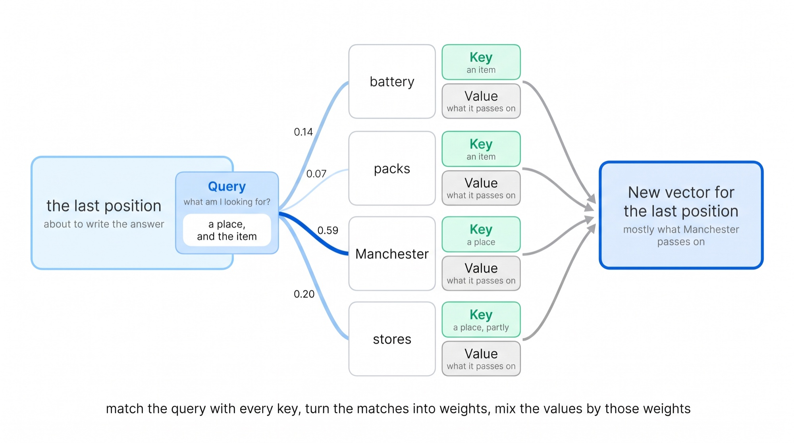

The Brain: how an LLM works
We follow one sentence, Emma’s question, through a real language model, from the first letter to the last digit of its answer.
Last time, the whole After
In Lecture 1 you did Emma’s battery pack order by hand on Ledgerline. Then Ask Northbridge did it from one sentence.
It had four parts: a brain, knowledge, hands, and a loop with trust around it.
Today we open the first one: the brain. Lecture 3 adds knowledge, Lecture 4 adds hands.

Emma asks the brain
We took away Ask Northbridge’s tools. No Ledgerline, no policy search. Just the model.
Emma types her question. The reply arrives in a second, sure of itself.
She asks where the number came from. It names a source.
Ledgerline says 5,400. The number, the warehouses and the source were all made up.
?stage=brain (gemini-3.8-flash, run 1 of 8). experiments/logs/cold_open.json.We asked again
One answer could be bad luck. So we asked the app the same question, the same way, 16 times.
Every time, a number. Never 5,400.
Asked with no system prompt at all, the same model declines. The app’s prompt, “Help with purchasing: stock…”, is what pushes it to answer.
?stage=brain on gemini-3.8-flash, recorded on Modal. experiments/logs/cold_open.json.Ask the class ·
Where do you think that number came from?
Type 1 to 4 in the chat. Keep your answer: we come back to it in Section 9
How did a machine write that sentence, one word at a time, and why is the number wrong?
We cannot open Gemini, the model behind Ask Northbridge. So we open a small model of the same kind, send it the same question with the same system prompt, and watch every step.
Qwen2.5-0.5B-Instruct
A small open chat model from Alibaba’s Qwen team, released in September 2024. It runs on a laptop CPU.
It is built like Gemini and GPT: the same parts, only fewer and smaller.
We asked it Emma’s question. It made up a number too. Every number in today’s 3D scene comes from that one run.
config.json and model card (huggingface.co/Qwen/Qwen2.5-0.5B-Instruct). The answer is from brain3d/trace.json.One sentence, nine sections
The same scene stays on screen all lecture. Each section adds one stage and shows that stage’s real numbers.

Film · Overture
What does a language model actually do?
Start with the whole model as one sealed box. Text goes in. What comes out?
One question, again and again
After Emma’s question, it is fairly sure how the answer starts.
At the first digit of the number, look how many digits it thinks are possible.
Ask the class ·
After Emma’s question the model gave “We” 56%. Where did the other 44% go?
30 seconds · one line in the chat
Film · 1 · Next-token prediction
How does text get into a model?
A chat is one long text
Emma sees messages. The model sees one text.
Markers show where each message starts and ends. The text stops right where the assistant should speak, so the next token is the start of the reply.
Pieces from a fixed list
Common words are one token. Rare words, codes and numbers are cut into several.
The model never sees letters. It sees this list of ids, and nothing else.
Where the pieces come from
- 1Start from single letters.
- 2Count which pair of neighbours appears most often.
- 3Glue that pair into one new piece.
- 4Repeat.
Click once per merge. Common words become one piece; rare words stay in parts.
The model’s vocabulary
BPE, run on a huge amount of text, left Qwen with a fixed list of pieces. That list is its vocabulary.
Tokens are the unit of cost
Providers charge per token in and per token out. One of Emma’s questions costs a fraction of a cent.
Today’s models also “think” before they answer, and you pay for those tokens too.
The same question takes more tokens in other languages, so it costs more.
Every turn re-sends the whole chat; an agent also sends its tools and every result. From now on, every budget is in tokens.
experiments/logs/cold_open.json, tokens.json.Ask the class ·
Why might the number 5,400 cost more tokens than the word “five”?
30 seconds · one line in the chat
Film · 2 · Tokens
How can numbers carry meaning?
Each token becomes a vector
In Qwen2.5-0.5B each row has 896 numbers. A list of numbers like this is a vector.
Nobody wrote these numbers. Training set them (Section 8).
A map of meaning
Words used in similar sentences end up with similar rows.
The nearest rows to “battery” and “Manchester” in the whole list of 151,000.
Ask the class ·
“battery” and “batteries” are different tokens with different ids. Why do their vectors end up close together?
30 seconds · one line in the chat
Film · 3 · Vectors
How does a word know what is around it?
Why a token must look at the others
Emma’s question, as the model holds it after Section 3: fifteen vectors, each built from its own token alone.
Query, key, value
Like a library search: your question is matched against the labels on the shelves, and you read the books that match best.

The same idea, in four lines
For one token looking back at the tokens before it.
Worked on Emma’s tokens
The last position looks back at “battery”, “packs”, “Manchester” and “stores”. Two numbers per token so it fits on a page: how much it is a place, how much it is the item.
Ask the class ·
Which earlier word should “stores” pay the most attention to, and why?
30 seconds · one line in the chat
Film · Query, key and value
What happens between reading and answering?
Look, then think
Stack 24 of them and you have Qwen2.5-0.5B. Vectors keep their size, 896, all the way up.

Ask the class ·
Attention mixes tokens; the MLP works on each token alone. Which of the two can connect “stores” to “Manchester”?
30 seconds · one line in the chat
Film · Attention, inside the model
Film · 24 blocks
How does a list of numbers become one word?
Scores become chances, one token is picked
Ask the class ·
If the model always takes the top token, will Emma get the same answer every time she asks? Why?
30 seconds · one line in the chat
Film · 6 · A choice
How does one guess become a whole answer?
Add it, run again
So a whole e-mail is many single guesses, each one seeing all the ones before it.
Drag through the answer. Orange tokens are the digits of the number.
It sounds sure. It was not.
The number was written digit by digit, like every other token.
The model gave its first digit only a chance. The sentence still reads as a plain fact.
Sample again and you get a different number. That is the spread we saw in the cold open.
The context window
The model keeps nothing between calls. Each turn, the app sends the whole chat again.
So the context is the model’s only memory. Remember this sentence: it is Lecture 3.
system prompt + Emma’s question
system prompt + Emma’s question + its answer + Emma’s next message
max_position_embeddings in the model’s config.json and the model card.Ask the class ·
When the model picked the second “0” of “100”, which tokens could it see?
30 seconds · one line in the chat
Film · 7 · The loop
Where did the numbers in the blocks come from?
What we trained on
To see training happen, we trained a tiny GPT ourselves, on Northbridge’s own text.
Stores lines, orders, approvals, goods receipts, e-mails between Emma, Daniel, Luis, Aiko and Henrik, and every line of the purchase policy, supplier policy and approval matrix.
ledgerline/ledgerline/course/l2/northbridge_corpus.md, made by course/l2/corpus.py; counts from experiments/logs/tinygpt.json.How we trained it
A tiny GPT: blocks, heads, numbers. It reads one character at a time.
steps on 2 CPUs, about 7 minutes. The loss falls from a blind guess to a confident one.
The test: did it learn the stock?
It is not a chat model, so we ask the way it knows: the start of a stores line, before and after training.

What year does it think it is?
Each model says its own last day. None of them is 26 October 2026.
The date it gives in the app comes from the system prompt, not from the model.
Learnt in training, or given in the prompt?
The same fact, 5,400, two ways.
Ask the class ·
Our tiny GPT read Emma’s e-mail with 5,400 three times. Why does it still write other numbers?
30 seconds · one line in the chat
Film · 8 · Where the weights came from
Why did it make the number up, and what fixes it?
A plausible number
The question became tokens. Nothing in them was the stock.
The weights hold patterns from public text: what a stock answer sounds like.
So it wrote a stock answer, digit by likely digit.
It did not lie. It did the only thing it does: guess the next token.

One line changes the answer
Same model, same question. We add one Ledgerline stock line to the system prompt.
Now the number is in the context.
Attention finds it, and the answer is right. Gemini, with the same line: of runs said 5,400.
Sample at 0.7, though, and the digits can still drift. For facts: keep the dial low, and check the number.
Lecture 3, knowledge: find the right facts and put them in. Lecture 4, tools: let the model ask Ledgerline itself.
Ask Northbridge, brain only
Open the link on your phone or laptop. No tools, no Ledgerline.
1. Ask: “How many city e-bike battery packs do we have in Manchester stores?”
2. Ask again. Then ask where the number came from.
3. Ask something it does well: “Draft a polite reminder to Voltway Cells about the delivery for the spring launch run.”
4. Post one thing it did well and one thing it made up.
The same Ask Northbridge you used in Lecture 1, at the stage we built today.
Try it live/after?stage=brain
It may decline or invent. Both are the same game: which reply is the likeliest next text for this prompt.
Ask the class ·
With the stock line in the prompt, which earlier tokens should the first digit of the answer attend to most?
30 seconds · one line in the chat
Film · 9 · Why it made it up
Film · The whole machine
What happened to Emma’s question
- 1Next-token prediction. The model gives a probability to every possible next token.
- 2Tokens. The chat became one text, then token ids.
- 3Vectors. Each id became a row of 896 numbers; similar words sit close.
- 4Attention. Each token looked back and mixed in what it needed.
- 524 blocks. Look, then think, 24 times; the answer formed near the top.
- 6A choice. Scores became probabilities; temperature shaped them; one token was picked.
- 7The loop. Add it, run again, until the end marker. The digits too.
- 8Training. The numbers came from public text and were frozen on the last training day.
- 9The fix. Nothing carried the stock, so it wrote a likely one. Facts in the context fix it.
Two sockets
The brain talks well. It cannot know Northbridge. The next two lectures connect it.
Knowledge
Emma asks whether she can buy battery packs from Brightcell Energy. The answer is in Purchase Policy §6.2. We find the right paragraph by meaning and put it in the context, with its citation.Tools
Ask Northbridge checks the stock itself. Offered two tools, the same model wrote no number at all: it asked forfind_item("city e-bike battery pack"). Our code runs it on Ledgerline, and the real 5,400 comes back into the context.NB2 · The Brain
Colab, free CPU, no API key. Nine sections, one per section of today, on Emma’s same question.
Sections 1–3
Ask Northbridge’s recorded runs, then Qwen2.5-0.5B-Instruct live: the next-token bars, the 100 tokens, the cost, the vectors. Exercises 1–3: softmax by hand, one BPE merge, the price in pounds.Sections 4–7
Attention on “Emma needs 2,000 packs” in numpy, then the real heads, the logit lens, temperature and the loop. Exercise 4: one attention row by hand.Sections 8–9
A tiny GPT trained from scratch on Northbridge’s documents in a few minutes; the cut-off; the fact in the prompt. Exercises 5–6: the loss before training; put the fact in the prompt.SOLUTION = True: set it to False and try it yourself. The last cell takes your own documents: that is A2.A2 · How a brain would read your work
On your own work or domain. Due before Lecture 3, Sat 7 Nov, 7 AM IST. Details in A2.md.
Tokens
Cut a page of your own text. What splits most, and why it matters. What 1,000 questions a day for a year would cost, thinking included.Where it invents
Three real questions, asked of a brain alone, four times. Trace one invented detail through today’s steps. Which made-up answer would do the most harm?The facts it needs
Where each missing fact lives. Knowledge (Lecture 3) or tools (Lecture 4)? Put one fact in the prompt and test it.Run NB2
Solve at least three of the six exercises yourself, and answer two short questions.The Memory
The model does not know Northbridge, and the context is its only memory. We give it Northbridge’s policies, find the right paragraph by meaning, and make it cite §6.2 when Emma asks about Brightcell Energy.